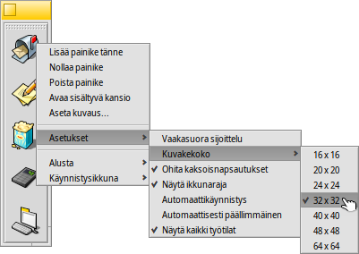

Suomi
Suomi Català
Català Deutsch
Deutsch English
English Español
Español Français
Français Italiano
Italiano Magyar
Magyar Polski
Polski Português
Português Português (Brazil)
Português (Brazil) Română
Română Slovenčina
Slovenčina Svenska
Svenska 中文 ［中文］
中文 ［中文］ Русский
Русский Українська
Українська 日本語
日本語 Käynnistysikkuna
Käynnistysikkuna
| Työpöytäpalkki: | ||
| Sijainti: | /boot/system/apps/LaunchBox | |
| Asetukset: | ~/config/settings/LaunchBox/* |
Yksi tai useampia Käynnistysikkuna-sovelmia voidaan käynnistää järjestämään suosikkisovelluksesi tai asiakirjan pikanäppäimiä. Päätät itse, näytetäänkö ne kaikissa vai vain nykyisessä työtilassa. Ne voivat palvella myös asiakirjan nopeassa avauksessa tietyssä sovelluksessa. Esimerkiksi voisit raahata ja pudottaa HTML-tiedoston tekstieditoriin Käynnistysikkunassa sen sijaan, että HTML-tiedosto avattaisiin ensisijaisessa sovelluksessa eli selaimessa.
Kaikki valitsimet tavoitetaan asiayhteysvalikosta:
| Lisää tyhjän painikkeen. | |||
| Tyhjentää painikkeen. | |||
| Poistaa painikkeen. | |||
| Hiiren kohdistimen pitäminen kuvakkeen päällä näyttää työkaluvihjeen tiedostonimellä ja silloin kun kyse on sovelluksesta, sen lyhyen kuvauksen, jos se eroaa nimestä (katso aihe Tiedostotyypit). Tällä valikkorivillä voit muokata tämän työkaluvihjeen kuvausta. | |||
Tasaa painikkeet vaakasuoraan. Asettaa kuvakekooksi 16 ... 64 pikseliä. Käynnistää objektin vain kerran, vaikka (vahingossa) kaksoisnapsauttaisit. Näyttää ikkunarajat. Käynnistysikkuna ponnahtaa näkyviin, jos hiiri on lähellä näytön reunaa. Näyttää Käynnistysohjelma-sovelman jokaisessa työtilassa. | |||
Lisää uusi ilmentymä. Tee nykyisestä ilmentymästä kaksoiskappale. Sulje nykyinen ilmentymä. | |||
Lopettaa kaikki Käynnistysikkuna-ilmentymät. |